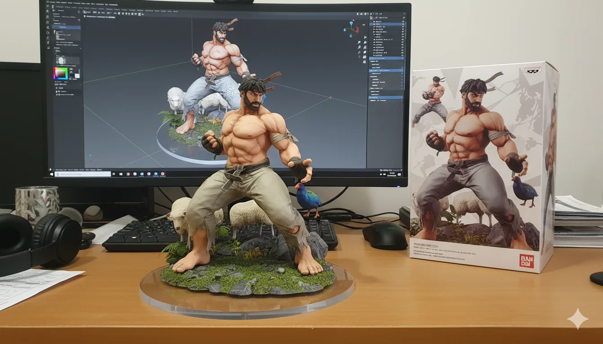
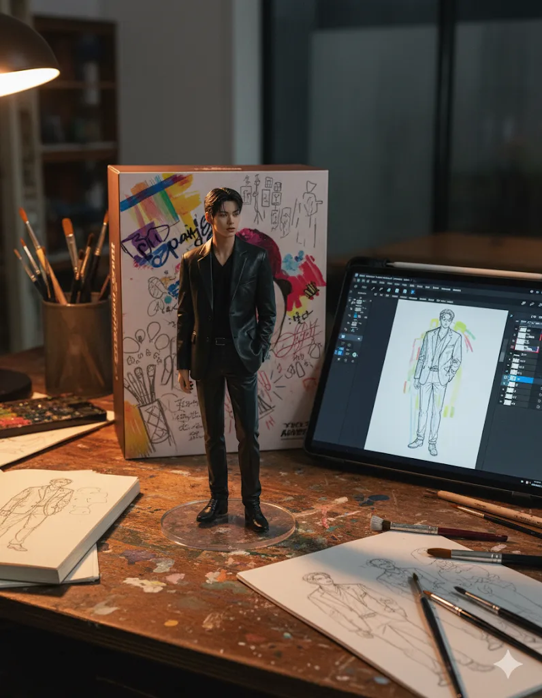
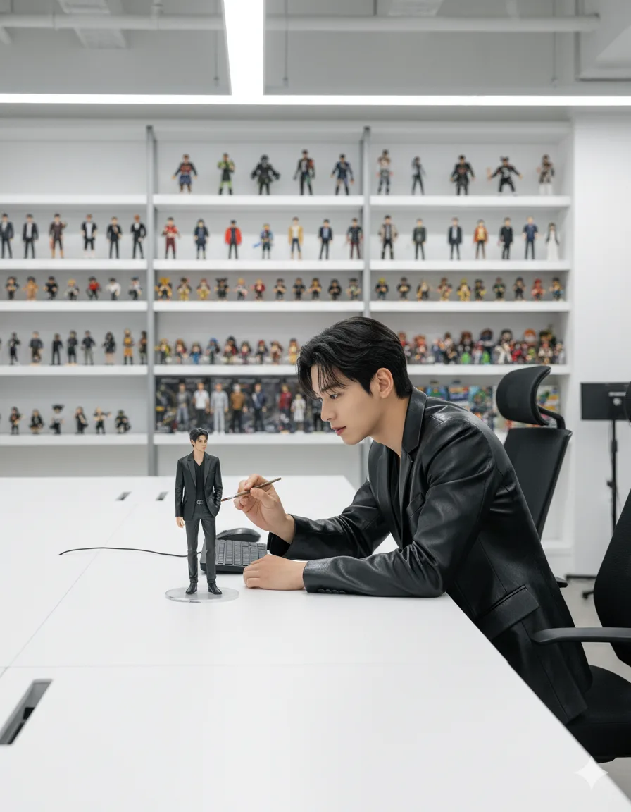
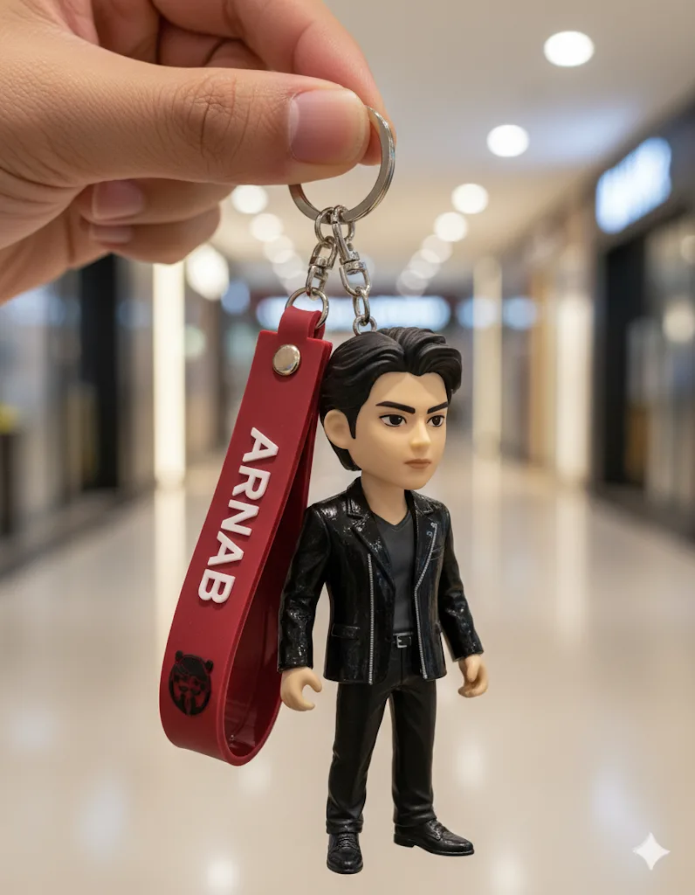
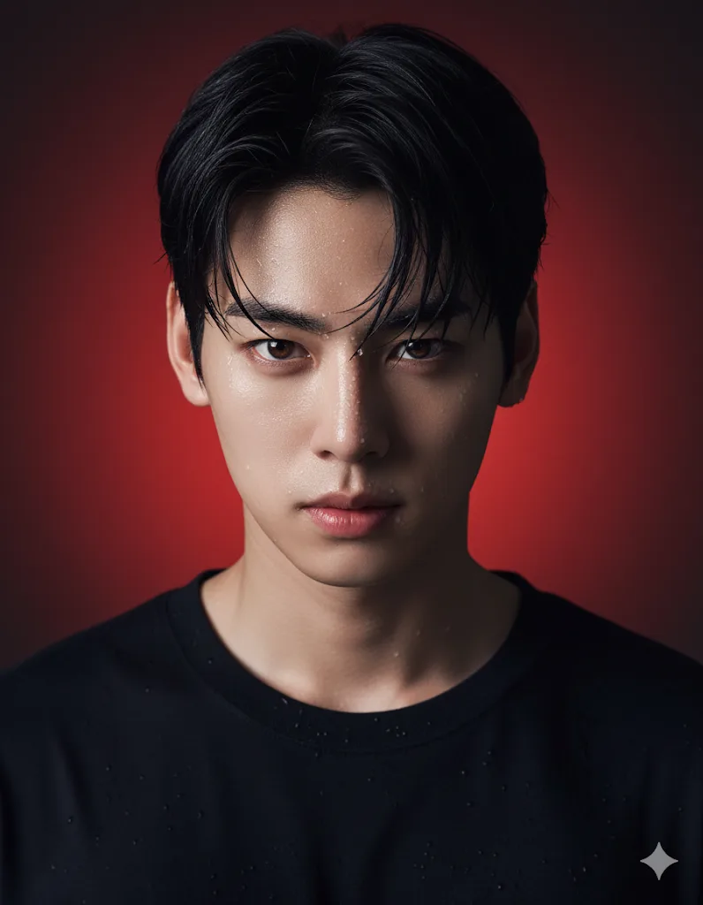
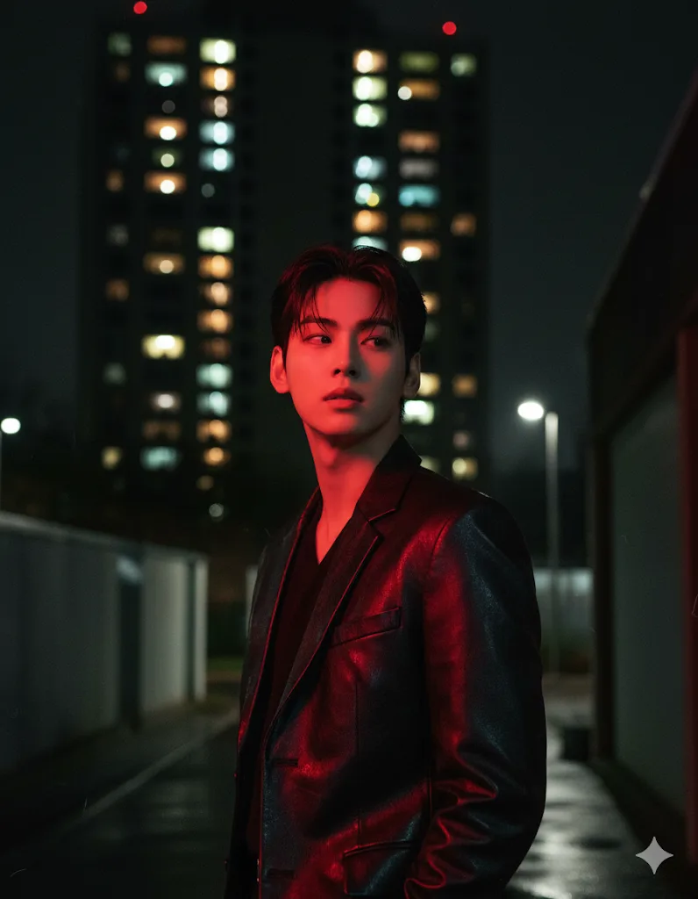

https://ai.google.dev/gemini-api/docs?hl=ko
구글 생성형 AI 공식 메뉴얼 문서
각 프롬프트를 복사하여 바로 사용하실 수 있으며, 필요에 따라 상황이나 동작 부분만 수정하여 활용하세요.
young Korean woman, bob cut dark hair with bangs, vintage round glasses
young Korean man, short textured black hair, wire-frame glasses, casual beard, silver watch
25-year-old Caucasian man, wavy brown hair, thick-rimmed glasses, stubble, denim jacket
25-year-old Caucasian woman, curly red hair in ponytail, cat-eye glasses, dimpled smile, minimalist jewelry
young Korean woman, bob cut dark hair with bangs, vintage round glasses, waking up stretching in bed, photorealistic, studio lighting
young Korean woman, bob cut dark hair with bangs, vintage round glasses, brushing teeth at bathroom sink, photorealistic, studio lighting
young Korean woman, bob cut dark hair with bangs, vintage round glasses, eating breakfast at kitchen table, photorealistic, studio lighting
young Korean woman, bob cut dark hair with bangs, vintage round glasses, studying at desk with laptop, photorealistic, studio lighting
young Korean woman, bob cut dark hair with bangs, vintage round glasses, relaxing with coffee, photorealistic, studio lighting
young Korean woman, bob cut dark hair with bangs, vintage round glasses, cooking dinner in kitchen, photorealistic, studio lighting
young Korean woman, bob cut dark hair with bangs, vintage round glasses, reading book in comfortable chair, photorealistic, studio lighting
young Korean woman, bob cut dark hair with bangs, vintage round glasses, sleeping peacefully in bed, photorealistic, studio lighting
Generate a photorealistic young Korean woman with bob cut dark hair with bangs, vintage round glasses, casual sweater, friendly smile, clean background.
Keep the same woman, but swap the sweater for a red blazer and add a silk scarf.
Generate an anime-style young adult woman with shoulder-length wavy hair, round glasses, cozy cardigan, bright smile, simple background, cartoon illustration.
Keep the same character, but change the cardigan to a denim jacket and add a beanie hat.
young Korean woman, bob cut dark hair with bangs, vintage round glasses, low angle, close-up shot, determined expression waking up, dramatic morning light, photorealistic
young Korean woman, bob cut dark hair with bangs, vintage round glasses, front view, medium close-up, looking at mirror with resolve, bathroom reflection, photorealistic
young Korean woman, bob cut dark hair with bangs, vintage round glasses, high angle, medium shot, hurriedly eating breakfast, kitchen table, photorealistic
young Korean woman, bob cut dark hair with bangs, vintage round glasses, side view, close-up shot, intensely focused studying, desk lamp lighting, photorealistic
young Korean woman, bob cut dark hair with bangs, vintage round glasses, eye-level, full shot, relaxed coffee break, comfortable living room, photorealistic
young Korean woman, bob cut dark hair with bangs, vintage round glasses, top view, medium shot, creative cooking process, kitchen counter, photorealistic
young Korean woman, bob cut dark hair with bangs, vintage round glasses, close-up, front view, moment of inspiration while reading, warm evening light, photorealistic
young Korean woman, bob cut dark hair with bangs, vintage round glasses, high angle, full shot, peaceful sleep, cozy bedroom, soft lighting, photorealistic
young Korean woman, bob cut dark hair with bangs, vintage round glasses, eye-level, medium shot, drinking coffee casually, photorealistic
young Korean woman, bob cut dark hair with bangs, vintage round glasses, low angle, close-up, enjoying coffee moment, photorealistic
young Korean woman, bob cut dark hair with bangs, vintage round glasses, high angle, full shot, alone with coffee, photorealistic
[캐릭터 묘사] + [구도 지정] + [상황/감정] + [스타일]
기존
young Korean woman, bob cut dark hair with bangs, studying at desk
영화적 개선
young Korean woman, bob cut dark hair with bangs, vintage round glasses, side view, close-up shot, intensely studying, dramatic lighting, photorealistic
이 프롬프트들을 기반으로 자신만의 창의적인 변형을 만들어보세요!
Create a 1/7 scale commercialized figurine of the characters in the picture, in a realistic style, in a real environment. The figurine is placed on a computer desk. The figurine has a round transparent acrylic base, with no text on the base. The content on the computer screen is a 3D modeling process of this figurine. Next to the computer screen is a toy packaging box, designed in a style reminiscent of high-quality collectible figures, printed with original artwork. The packaging features two-dimensional flat illustrations.

Create a 1/7 scale commercialized figurine of the characters in the picture, in a realistic style, in a real environment. The figurine is placed on a wooden artist's desk, scattered with sketchbooks and paintbrushes. The figurine has a round transparent acrylic base, with no text on the base. The content on the computer tablet screen is a digital illustration painting process of the figurine, showing layers and brush strokes. Next to the tablet is a toy packaging box styled like an artbook, decorated with colorful concept sketches.

Create a 1/7 scale commercialized figurine of (the character in the picture), realistic style, in a real environment. Figurine placed on a computer desk. has a round transparent acrylic base. Next to the desk is the real person in the picture, in the real life size with the same attire as in the picture and the figurine, cleaning the figurine carefully with a fine brush. in a modern styled studio room, brightly lit. With some collection of toys and action figures in the background.

Ultra-realistic product photography, soft studio lighting with a glossy sheen. A collectible miniature keychain, with the character's face and pose based on the illustration provided. Not a photo of a real person, but a premium action-figure style toy. Designed with stylized proportions and sculpted details, made from 3D printed plastic or PVC vinyl. The surface is smoothly painted, there are visible molding seam lines, sculpted hair, simplified facial features, and clothing folds that look like they came from a factory. The figure has a glossy and matte paint finish, resembling a high-quality collectible figure. Keep the face same. The keychain strap is color-coordinated with the figure's theme, adorned with simple motifs and bold text like a brand name or a cool phrase. A real human hand gently pinches the keychain, captured in sharp focus. The background is a softly blurred interior of a mall with cinematic bokeh, highlighting the charm of this miniature collectible toy. The name "Arnab" is on the keychain.

Hyper-realistic, cinematic close-up portrait of a person with the same hair style and color as the reference photo, wet skin glistening with water droplets, strands of hair naturally falling across the face. The eyes appear illuminated and striking, reflecting a subtle glow of light, but preserve the natural color from the reference photo. Expression is fierce and determined. Background is a radial red gradient fading into dark tones, resembling a professional studio backdrop. Dramatic, soft lighting highlights the face with depth and contrast, creating a powerful, cinematic atmosphere.

A cinematic vertical night portrait using the subject's selfie as reference for facial features and hairstyle, keeping the exact same hair, natural and realistic. The subject stands outdoors, body slightly turned at an angle, with the head subtly tilted back and to the left, gazing calmly away from the camera with parted lips, exuding quiet confidence and mystery. The background shows a tall apartment building, its windows softly glowing with warm yellow-orange bokeh light, surrounded by deep, atmospheric shadows. From the front-left, an intense, deep red neon light washes over the subject, casting rich crimson tones across the face, hair and leather jacket, while the right side fades into heavy, dramatic shadows for a bold, cinematic contrast. Subtle reflections of red light appear on nearby walls and the wet ground, creating a vivid urban mood. The subject wears a black leather blazer jacket, perfectly fitted, with visible texture that catches the red neon glow. Underneath, a simple dark shirt adds layering, without distracting from the jacket's rugged, stylish look. The overall outfit feels edgy, urban, and timeless, evoking a sense of rebellion and strength. The color palette is dominated by deep blacks, dark grays and layered crimson reds, with golden accents from the glowing windows in the distance. Soft film grain, a subtle vignette, and natural textures give the portrait a premium editorial, cinematic aesthetic. Aspect ratio 4:5 or 3:4 vertical, perfect for a striking urban night scene.

무료 사용 가능 생성형 이미지 AI 웹사이트
1. 구글 IMAGEFX (베타 기간 무제한)
https://labs.google/fx/tools/image-fx
2. 구글 AI 스튜디오 (이미지 생성)
3. 드리미아 AI
4. LMarena
5. 이디오그램
6. 플레이그라운드 AI
7. 레오나르도 AI
8. Recraft
9. dream ai
무료 사용 가능한 이미지 편집 도구 (웹)